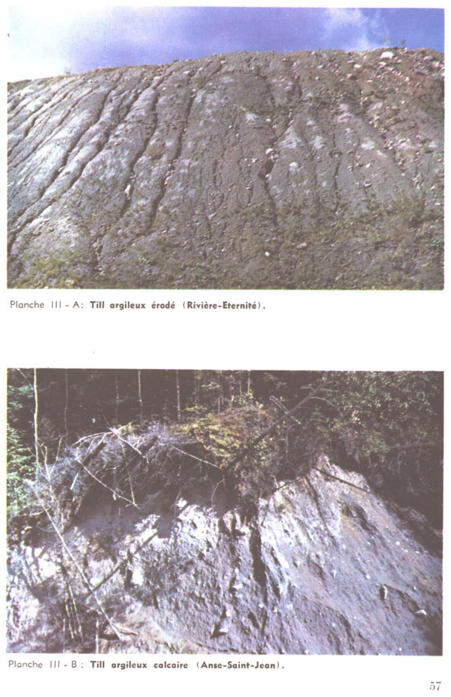
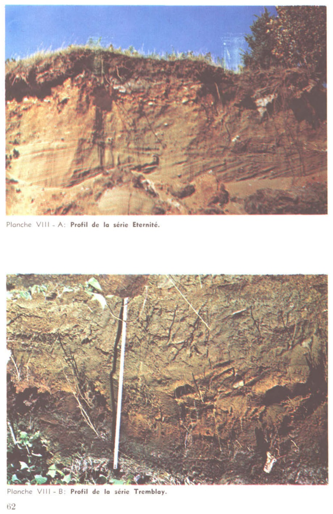

Identification & Caractéristiques Générales
La série Éternité est constituée de dépôts meubles d'origine fluviatile ou fluvio-glaciaire, généralement profonds de plus d'un mètre, pouvant reposer par endroits sur un till de fond. Ce matériau parental se compose principalement de sables graveleux, de sables lités plus ou moins bien triés, de graviers et de lits de graviers, incluant parfois des fractions plus grossières ou des passées à teneur plus élevée en limons et sables fins d'origine deltaïque, ainsi que des lits minéraux de magnétite. Sur le plan géomorphologique, ces sols occupent des terrasses à topographie horizontale à faiblement ondulée (avec des pentes généralement inférieures à 9 %), ainsi que des versants de vallées, des bordures de cours d'eau, des positions de haut de pente et des crêtes.
Le profil morphologique est caractérisé par une texture dominante variant du sable au sable loameux plus ou moins grossier, renfermant une charge en fragments grossiers (cailloux et graviers) très variable, survenant par couches ou de façon continue à différentes profondeurs, bien que généralement dépourvu de blocs erratiques majeurs. Le drainage naturel est rapide à bon, associé à une perméabilité élevée du profil et à un ruissellement de surface lent. La réaction du sol (pH) est fortement à modérément acide. La dynamique pédogénétique, typique d'un développement podzolique, se manifeste par la présence d'un horizon B (Bf), pouvant inclure localement des poches d'induration ou des débuts de cimentation de type ortstein (Bfc), des concrétions ferrugineuses (Bfcc), ainsi que des variations latérales incluant des faciès brunsisoliques ou de légères marques de gleyification en zone périphérique.
Sur le plan agronomique, la série Éternité présente des aptitudes limitées pour les cultures en raison de sa pierrosité variable, de sa texture grossière entraînant une faible capacité de rétention en eau et en éléments nutritifs, ainsi que de sa localisation fréquente en bordure de vallées étroites. Lorsqu'elle se trouve en association avec des sols adjacents plus favorables, elle peut convenir aux cultures générales de la ferme et aux plantes fourragères, bien que les superficies exploitables demeurent restreintes. Les principales interventions requises incluent un apport régulier d'amendements calciques pour corriger l'acidité, une gestion rigoureuse de la fertilisation pour contrer le lixiviat des éléments nutritifs inhérent à la forte perméabilité, ainsi qu'un travail du sol adapté pour composer avec la charge en fragments grossiers et les zones d'induration superficielle.
Caractères Distinctifs & Morphologie Génétique (Comté de Chicoutimi — Page 49)
- Topographie : légèrement ondulée à horizontale
- Drainage : bon
- Grand-groupe génétique : podzol
- Degré d'érosion : léger (D1-W1)
- Classe d'utilisation : 4 (3)
- Association géographique : séries Dumas, Sagard, Périgny
- Végétation naturelle : bouleaux jaunes, bouleaux blancs, trembles, épicnettes (épicéas), sapins, etc.
Classification Taxonomique & Environnement Pédologique
| Ordre Pédologique | Podzolique |
|---|---|
| Grand Groupe (SCSS) | Podzol humo-ferrique |
| Sous-Groupe Taxonomique | Podzol humo-ferrique orthique |
| Famille Pédologique | Sableuse, mixte sableux, acide |
| Mode de Dépôt Parental | Fluviatile |
| Classe de Drainage Naturel | Bien drainé |
| Régime Thermique & Humidité | Frais / Subhumide |
Description Morphologique du Profil Type
Séquences génétiques des horizons pédologiques caractérisant le profil type représentatif de la série Éternité :
Profil représentatif — Comté de Charlevoix
✓ Source : Comté de Charlevoix — Page 35Couleur Munsell : 10YR 7/1
Structure & Consistance : Polyédrique à granulaire
Description morphologique : Sable loameux gris clair (10 YR 7/1 h); particulaire; meuble; limite distincte, ondulée; fortement acide.
Couleur Munsell : 5YR 3/4
Structure & Consistance : Polyédrique à granulaire
Description morphologique : Loam sableux à loam sablo-graveleux brun-rouge foncé (2,5 YR 3/4 h); particulaire; meuble; localement cimenté (ortstein); limite distincte, ondulée; moyennement acide.
Couleur Munsell : 5YR 5/5, 5YR 4/8
Structure & Consistance : Polyédrique à granulaire
Description morphologique : Loam sablo-graveleux brun vif (7,5 YR 5/5 h); lentilles loam sablo-graveleux rouge (2,5 YR 4/8 h); particulaire; meuble; faiblement cimenté; limite distincte, ondulée; moyennement acide.
Couleur Munsell : 10YR 7/3
Structure & Consistance : Polyédrique à granulaire
Description morphologique : Sable graveleux parfois caillouteux; brun très pâle (10 YR 7/3-7/4 h); particulaire; meuble; moyennement acide.
Profil forestier / boisé — Comté de Chicoutimi
✓ Source : Comté de Chicoutimi — Page 49Couleur Munsell : 10YR 3/1
Structure & Consistance : Polyédrique à granulaire
Description morphologique : Matière organique mélangée à la matière minérale; gris très foncé à brun gris très foncé (10YR 3/1-3/2); pH : 4.7.
Couleur Munsell : 10YR 6/2
Structure & Consistance : Polyédrique à granulaire
Description morphologique : Loam sableux fin gris clair à gris brun clair (10YR 6/2-6/3); pH : 4.9.
Couleur Munsell : 2.5YR 2/4
Structure & Consistance : Polyédrique à granulaire
Description morphologique : Loam sableux fin induré (ortstein) rouge foncé (2.5YR 2/4); pH : 4.7.
Couleur Munsell : 2.5YR 4/8
Structure & Consistance : Polyédrique à granulaire
Description morphologique : Sable graveleux à gravelo-limoneux rouge jaune (2.5YR 4/8); pH : 5.3.
Couleur Munsell : 5YR 5/8
Structure & Consistance : Polyédrique à granulaire
Description morphologique : Sable grossier gravelo-caillouteux rouge jaune (5YR 5/8); pH : 5.3.
Couleur Munsell : 10YR 5/6
Structure & Consistance : Polyédrique à granulaire
Description morphologique : Sable grossier gravelo-caillouteux brun jaune (10YR 5/6-5/8); pH : 5.6.
Couleur Munsell : 10YR 5/4
Structure & Consistance : Polyédrique à granulaire
Description morphologique : Sable graveleux brun jaune (10YR 5/4-5/6); pH : 5.4.
Profil cultivé (agricole) — Les terres cultivées de la MRC d
✓ Source : Les terres cultivées de la MRC d — Page 52Couleur Munsell : 10YR 3/2, 2.5Y 5/2.5
Structure & Consistance : Polyédrique à granulaire
Description morphologique : Sable grossier loameux; brun gris très foncé (10 YR 3/2 h), brun gris à brun olive clair (2.5 Y 5/2.5 s); particulaire et granulaire, très fine, très faible; tendre; racines abondantes, moyennes et plus petites; fragments grossiers, graveleux, moins de 5%; limite nette, régulière; épaisseur de 19 à 28 cm; modérément acide.
Couleur Munsell : 10YR 4/3, 2.5Y 5/4
Structure & Consistance : Polyédrique à granulaire
Description morphologique : Sable grossier; brun (10 YR 4/3 h), brun olive clair (2.5 Y 5/4 s); particulaire; meuble; racines peu abondantes, fines et plus petites; fragments grossiers, graveleux, 10 à 15%; limite nette, ondulée; épaisseur de 10 à 12 cm; peu acide.
Couleur Munsell : 10YR 4/4, 2.5Y 5.5/3
Structure & Consistance : Polyédrique à granulaire
Description morphologique : Sable grossier loameux; brun jaune foncé (10 YR 4/4 h), brun olive clair à brun jaune clair (2.5 Y 5.5/3 s); granulaire, fine à très fine, très faible; meuble; racines peu abondantes, fines et plus petites; fragments grossiers, graveleux, 20 à 30%; limite graduelle, ondulée; épaisseur de 10 à 20 cm; peu acide.
Couleur Munsell : 10YR 3/2.5, 10YR 5/2
Structure & Consistance : Polyédrique à granulaire
Description morphologique : Sable grossier graveleux; brun foncé à brun gris très foncé (10 YR 3/2.5 h), brun gris (10 YR 5/2 s); particulaire; tendre; racines peu abondantes, fines et plus petites; fragments grossiers, caillouteux, 10% et graveleux, 20 à 30%; limite abrupte régulière; peu acide.
Couleur Munsell : 2.5Y 4/2, 10YR 7/1
Structure & Consistance : Polyédrique à granulaire
Description morphologique : Sable fin et loameux; brun gris foncé (2.5 Y 4/2 h), gris clair (10 YR 7/1 s); massive; peu dure; peu acide.
Profil cultivé (agricole) — Les terres cultivées de la MRC d
✓ Source : Les terres cultivées de la MRC d — Page 53Couleur Munsell : 10YR 3.5/1 (matrice), 2.5Y 6/2 (marbrures)
Structure & Consistance : Polyédrique à granulaire
Description morphologique : Loam sableux grossier à sable grossier loameux; gris foncé à très foncé (10 YR 3.5/1 h), gris brun clair (2.5 Y 6/2 s); marbrures fréquentes, fines et moyennes, grossières, marquées, brun rouge foncé (5 YR 3/4 h); granulaire, fine, faible à modérée; friable à ferme; racines très abondantes, moyennes et plus petites; fragments grossiers, graveleux, moins de 10%; limite abrupte, régulière; épaisseur de 25 à 30 cm; fortement acide.
Couleur Munsell : 2.5Y 6/1.5 (matrice), 2.5Y 7.5/1 (marbrures)
Structure & Consistance : Polyédrique à granulaire
Description morphologique : Sable grossier loameux; gris à gris brun clair (2.5 Y 6/1.5 h), gris clair à blanc (2.5 Y 7.5/1 s); marbrures fréquentes, fines, moyennes et grossières, marquées, brun olive clair (2.5 Y 5/6 h); particulaire, sans structure; très friable; racines peu abondantes, fines et plus petites; fragments grossiers, graveleux, moins de 10%; limite graduelle, régulière; peu acide.
Couleur Munsell : 2.5Y 4/1 (matrice), 2.5Y 6/1.5 (marbrures)
Structure & Consistance : Polyédrique à granulaire
Description morphologique : Sable grossier graveleux; gris foncé (2.5 Y 4/1 h), gris à gris brun clair (2.5 Y 6/1.5 s); marbrures fréquentes, fines, moyennes et grossières, distinctes, olive (5 Y 4/3 h); particulaire, sans structure; meuble; racines peu abondantes, fines et plus petites; fragments grossiers, graveleux, 15 à 20%; limite graduelle, régulière; peu acide.
Couleur Munsell : 2.5Y 4/1 (matrice), 2.5Y 6/1 (marbrures)
Structure & Consistance : Polyédrique à granulaire
Description morphologique : Sable grossier loameux graveleux; gris foncé (2.5 Y 4/1 h), gris (2.5 Y 6/1 s); marbrures nombreuses, fines et moyennes, distinctes, olive (5 Y 4/3 h) et brun olive (2.5 Y 4/3 h); particulaire, sans structure; meuble; fragments grossiers, graveleux, 15 à 20%; limite abrupte, régulière; modérément acide.
Couleur Munsell : 5Y 4.5/1 (matrice), 7.5YR 5/6 (marbrures)
Structure & Consistance : Polyédrique à granulaire
Description morphologique : Loam; gris à gris foncé (5 Y 4.5/1 h); marbrures nombreuses, moyennes et grossières, marquées, brun fort (7.5 YR 5/6 h); pseudo en lits inclinés; friable, peu collant; fragments grossiers, graveleux (grès), environ 15%; cassure du grès, grise (5 Y 5/1 h); couleur d'altération, brun jaune clair (10 YR 6/4 h); peu acide.
Profils Photographiques & Planches de Terrain
Documents iconographiques, figures pédologiques et coupes de terrain documentées dans les mémoires d'inventaire pour de la série Éternité :


Propriétés Physico-Chimiques & Analyses de Laboratoire
| Horizon | Prof. (pces/cm) | Sable % | Limon % | Argile % | pH | C % | N % | Ca éch. | Mg éch. | K éch. | H+ éch. | Bases tot. | C.E.C. (meq/100g) | Saturation % |
|---|---|---|---|---|---|---|---|---|---|---|---|---|---|---|
| L-H | 4/10 | — | — | — | 4.7 | 9.80 | 0.28 | 4.10 | 0.618 | 0.235 | 28.0 | 4.95 | 32.95 | 15.03 |
| Ae | 1-2½-2.5-6.5 | 76.2 | 20.2 | 3.6 | 4.9 | 0.44 | 0.03 | 0.90 | 0.200 | 0.010 | 3.0 | 1.11 | 4.11 | 27.00 |
| Bhf | 1/2.5 | 81.2 | 14.2 | 4.6 | 4.7 | 7.32 | 0.23 | 0.10 | 0.200 | 0.036 | 24.0 | 0.34 | 24.34 | 1.39 |
| Bf1+Bf2 | 5-8/12.5-20.3 | 90.2 | 6.2 | 3.6 | 5.3 | 1.11 | — | 0.10 | 0.167 | 0.025 | 5.0 | 0.29 | 5.29 | 5.48 |
| C1 | 7-8/17.8-20.3 | 93.2 | 4.2 | 2.6 | 5.6 | 0.19 | 0.01 | 0.30 | 0.117 | 0.036 | 1.0 | 0.45 | 1.45 | 31.03 |
| C2 | à 28/71.1 | 92.2 | 4.2 | 3.6 | 5.4 | 0.31 | 0.01 | 0.30 | 0.117 | 0.036 | 2.0 | 0.18 | 2.18 | 8.25 |
Particularités Régionales, Phases & Variantes Pédologiques
Déclinaisons régionales, faciès texturaux, phases d'érosion ou de pierrosité et variantes cartographiées par étude pour de la série Éternité :
| Étude Régionale | Symbole | Appellation / Phase / Variante | Différenciation avec la série type (Analyse pédologique) |
|---|---|---|---|
| Comté de Charlevoix | En |
Éternité loam sableux graveleux | Modalité modale de référence (type de base de la série). |
| Comté de Chicoutimi | En |
Éternité sable graveleux | Faciès sableux très filtrant et pauvre en éléments nutritifs vis-à-vis du loam sableux de référence. |
| MRC de la Côte-de-Beaupré | EN |
Éternité sable à loam sableux grossier | Conforme à la série type de référence (caractéristiques texturales et drainage identiques). |
| Les terres cultivées de la MRC d | ETI |
Éternité | Conforme à la série type de référence (caractéristiques texturales et drainage identiques). |
Distribution Pédo-Paysagère & Représentativité Cartographique (Couverture PPS 2026)
- Sagard sable loameux (SGD) — co-occurrente dans 231 polygone(s)
- Périgny loam sableux caillouteux (PGY) — co-occurrente dans 123 polygone(s)
- Placide loam sableux graveleux (PCI) — co-occurrente dans 83 polygone(s)
Aptitudes Agronomiques, Hydropédologie & Conservation des Sols
Indicateurs Hydropédologiques & Vulnérabilité à l'Érosion (BDHP 2026)
Interprétation BDHP : Potentiel de ruissellement modérément faible. Infiltration modérée avec textures moyennes à modérément grossières.
Classement selon l'Inventaire des Terres du Canada (ITC / CLI) : Classe 3m.
- Potentiel agricole : Terroir adapté aux cultures régionales selon la texture dominante et la régie de drainage.
- Contraintes majeures : Bien drainé. Risque d'engorgement temporaire ou d'excès d'eau printanier.
- Gestion & Aménagement : Drainage souterrain ou superficiel préconisé sur les terres planes. Chaulage et apport organique régulier selon les bilans agronomiques.
- Cultures adaptées : Grandes cultures (maïs, soya, céréales), prairies fourragères et cultures maraîchères selon le contexte géomorphologique.